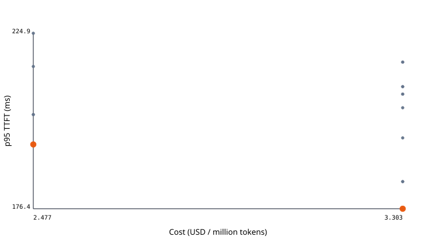
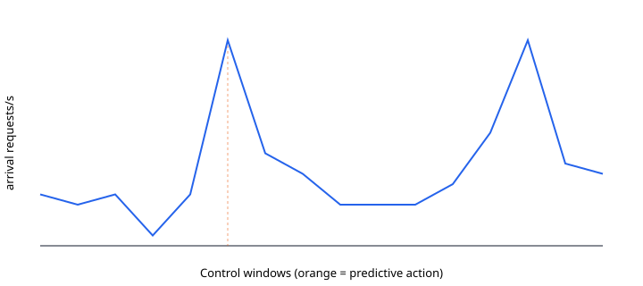

# SLOForge CPU evaluation Generated from hashed raw artifacts. No GPU was present, so these results characterize the deterministic CPU mock environment only. ## Selected plan SLOForge selected mock on local with 3 replicas, concurrency 6, and slo_slack. It is the lowest-objective uncertainty-adjusted Pareto candidate satisfying p95 TTFT <= 250 ms, p99 ITL <= 45 ms. The dominant predicted bottleneck is cold-start latency (709.0 ms). Evidence is recorded at artifacts/cpu-demo/evidence; predictions are bounded to the measured hardware fingerprint. | Metric | Measured/predicted result | |---|---:| | p95 TTFT | 194.179 ms | | p99 ITL | 3.582 ms | | Cost | $2.47718 / million tokens | | Held-out prefill MAPE | 10.874% | | Prefill interval coverage | 91.667% | | Held-out decode MAPE | 2.097% | | Decode interval coverage | 75.000% | | Replay SLO attainment | 97.500% | ## H1: profiling efficiency | Strategy | Trials | Best configuration | Best objective | |---|---:|---|---:| | exhaustive | 540 | cfg-73bac661fe7b | 2.477181768824118 | | random | 24 | cfg-f1c2e7640443 | 3.302909025098824 | | successive_halving | 24 | cfg-aad9cd4cfa41 | 2.477181768824118 | | uncertainty_aware | 24 | cfg-aad9cd4cfa41 | 2.477181768824118 | The comparison is a CPU mock study. It validates budget accounting and search behavior; it is not evidence of reduced GPU minutes until the GPU matrix is run. ## H2: compiled plan The selected configuration is one of 4 non-dominated feasible candidates. | Configuration | Workload regime | p95 TTFT (ms) | p99 ITL (ms) | Cost / million tokens | Fidelity | |---|---|---:|---:|---:|---| | documented-engine-default | steady | 40643.64 | 4.57 | 4.0590 | calibrated_prediction | | documented-engine-default | bursty | 33246.24 | 4.57 | 3.7705 | calibrated_prediction | | documented-engine-default | short-prompts | 7894.46 | 4.57 | 2.6349 | calibrated_prediction | | documented-engine-default | long-prompts | 50493.25 | 4.57 | 2.6797 | calibrated_prediction | | documented-engine-default | mixed | 40643.64 | 4.57 | 4.0590 | calibrated_prediction | | manual-static | steady | 19355.20 | 4.48 | 1.7362 | calibrated_prediction | | manual-static | bursty | 15924.59 | 4.48 | 1.6438 | calibrated_prediction | | manual-static | short-prompts | 73.99 | 4.34 | 1.9126 | calibrated_prediction | | manual-static | long-prompts | 615.42 | 4.40 | 1.4250 | calibrated_prediction | | manual-static | mixed | 19355.20 | 4.48 | 1.7362 | calibrated_prediction | | sloforge-plan | steady | 242.14 | 3.63 | 1.8703 | calibrated_prediction | | sloforge-plan | bursty | 13365.28 | 3.76 | 1.0959 | calibrated_prediction | | sloforge-plan | short-prompts | 39.97 | 3.47 | 5.7379 | calibrated_prediction | | sloforge-plan | long-prompts | 203.01 | 3.48 | 4.2750 | calibrated_prediction | | sloforge-plan | mixed | 194.18 | 3.58 | 2.4772 | calibrated_prediction | These comparisons are calibrated predictions backed by raw profile measurements, not relabeled configuration measurements. Wins and losses must be interpreted with the reported uncertainty and held-out coverage. ## H3: adaptive control - Predictive controller: 0 request deadline misses in the calibrated Rust twin, $0.036959 simulated cost, 0 policy oscillations. - Reactive controller: 2 request deadline misses in the calibrated Rust twin, $0.035500 simulated cost, 1 policy oscillations. ## H4: bottleneck diagnosis Closed-set label agreement was 100.00% across 8 labeled synthetic injections. The classifier produced 0 false positives across 8 negative control windows (0.00%) and mean execution latency was 0.005 ms. The complete confusion matrix, counters, and failures remain visible in `chaos-result.json`; this is not an estimate of field diagnosis accuracy. ## Limitations - The host has no NVIDIA GPU; Transformers, vLLM, and SGLang commands are implemented but unexercised here. - Mock-backend measurements test systems logic, determinism, queueing, and fault handling; they are not model performance claims. - Performance intervals apply only to the profiled configurations and workload.